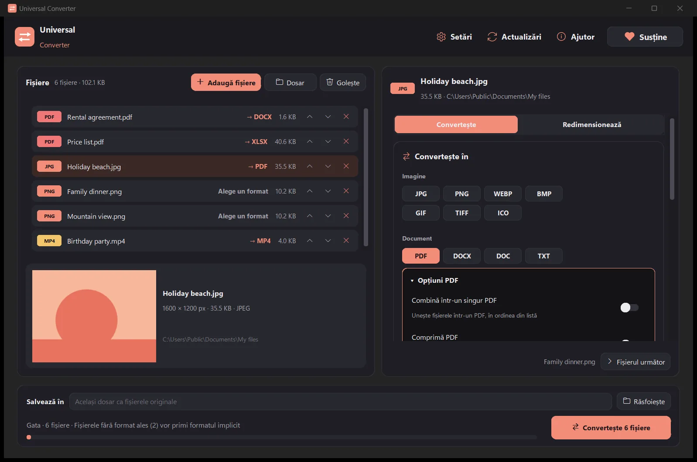

Convertește imagini între JPG, PNG, WEBP și altele
Imaginile salvate de pe site-uri sunt adesea WEBP, pe care unele programe nu le pot deschide. Universal Converter convertește între JPG, PNG, WEBP, TIFF, BMP, GIF și ICO, multe fișiere deodată.
Cum se instalează și se actualizează
- Deschide fișierul .dmg descărcat și trage Universal Converter în Aplicații.
- Deschide aplicația. Prima dată, macOS o blochează pentru că nu este semnată de Apple: dă clic pe Gata.
- Deschide Configurări sistem > Confidențialitate și securitate, derulează în jos, dă clic pe Deschide oricum și introdu parola. Faci asta o singură dată.
Actualizări: dacă permiți la prima deschidere a aplicației, aceasta caută versiuni noi la fiecare pornire, le verifică semnătura digitală și le instalează când alegi tu.
Cum se instalează și se actualizează
- Atinge Descarcă pentru Android pe telefon.
- Deschide fișierul descărcat. Dacă Android întreabă, permite browserului sau managerului de fișiere să instaleze aplicații.
- Atinge Instalează.
Actualizări: când deschizi aplicația, aceasta verifică dacă există o versiune nouă și îți spune când e gata. Descarc-o la fel și instaleaz-o peste cea veche; setările tale se păstrează.
Cum se instalează și se actualizează
- Descarcă fișierul .AppImage.
- Fă-l executabil: clic dreapta, Proprietăți > Permisiuni și permite rularea ca program (sau într-un terminal: chmod +x Universal-Converter-*.AppImage).
- Dă dublu clic pe el. Nu se instalează nimic: aplicația este acest singur fișier.
Actualizări: dacă permiți la prima deschidere, aplicația caută versiuni noi la fiecare pornire, le verifică semnătura digitală și înlocuiește fișierul AppImage acolo unde se află.
Cum se face
- Deschide Universal Converter.
- Trage fișierele sau un dosar întreg în fereastră, ori dă clic pe Adaugă fișiere.
- Alege JPG (sau PNG) la Convertește în.
- Dă clic pe Convertește. Fișierele noi sunt salvate lângă originale sau în dosarul pe care îl alegi.

De ce fără internet?
Universal Converter face treaba pe propriul tău dispozitiv. Fișierele tale rămân private, fișierele mari nu sunt o problemă și funcționează fără conexiune la internet.
Ce mai poate face
- Convertește un PDF în Word
- Convertește documente Word în PDF
- Combină mai multe fișiere într-un singur PDF
- Comprimă un PDF la mărimea pe care o alegi
- Comprimă un PDF la 100 KB, 200 KB sau orice mărime pentru formulare online
- Convertește paginile PDF în imagini JPG
- Transformă un document scanat într-un fișier Word editabil
- Redimensionează imagini sau micșorează-le la o mărime de fișier
- Redimensionează o fotografie sau o semnătură la 20 KB, 50 KB sau pixeli exacți
- Combină fotografii într-un singur PDF
- JPG în PDF sub 100 KB
- Copiază textul dintr-o imagine (OCR)
- Comprimă un videoclip fără să-l încarci
- Convertește videoclipuri între MP4, MKV, WebM, MOV și AVI
- Salvează sunetul unui videoclip ca MP3
- Fă un GIF dintr-un videoclip
- Scoate tabelele dintr-un PDF în Excel
- Convertește un extras de cont PDF în Excel
- Extrage tabelele din facturi PDF în Excel
- Semnează un PDF
- Completează un formular PDF